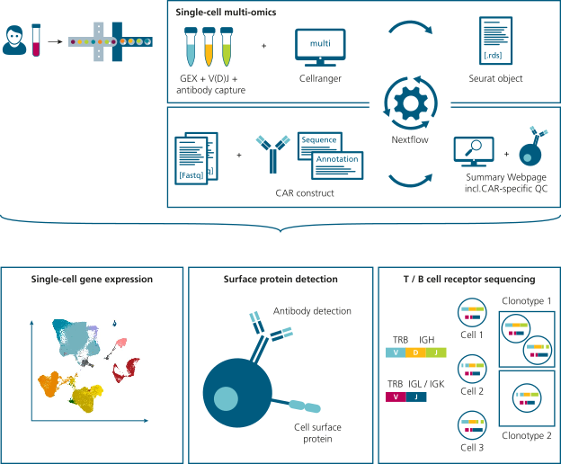

LivingDrugOmics¶
-
 Getting started
Getting started
If you're only interested in how to use the pipeline and its inputs, head over to the quickstart guide.
-
 What is LivingDrugOmics
What is LivingDrugOmics
Want to understand what LivingDrugOmics is and how it works?
 Get started quickly
Get started quicklyWhat is LivingDrugOmics¶
This Nextflow pipeline has been developed to support single-cell multi-omics for in-depth profiling of CAR T-cell products. The LivingDrugOmics pipeline enables comprehensive immune profiling by supporting single-cell 10x Genomics technologies, such as gene expression (GEX) sequencing, cell surface protein detection, and V(D)J (TCR and BCR) sequencing. To reliably characterize CAR-positive T cells, the pipeline enables CAR detection based on a custom reference and incorporates specialized quality control metrics to ensure robust identification of CAR-positive cells. Please see

Pipeline Overview¶
The pipeline is structured into three main processes: handling 10x data and libraries, performing core secondary analysis, and running quality control. The key feature of the pipeline is its ability to detect CAR-positive cells by incorporating a dedicated reference processing step. For this step, the user simply provide a CAR sequence file .fasta and CAR annotation file .gtf, for which CAR+ cells should be detected.For detailed explanation see: References. Common CAR sequences and annotation information can be found in our Resource.
Workflow: HANDLE_REFERENCES- Generates custom reference files for CellRanger based on the sequencing libraries (GEX, VDJ, ADT) and the CAR construct (FASTA, GTF) used.Workflow: RUN_SECONDARY_ANALYSIS- Executes CellRanger multi and generates a merged, annotated Seurat object as well as CAR specific metrics.Workflow: RUN_QUALITY_CONTROL- Quality control is performed using FastQC and FastQ-Screen. The results are merged using MultiQC.

Single-cell multi-omics¶
Cellranger multi¶
LivingDrugOmics allows for processing various combinations of gene expression and V(D)J libraries, with or without feature barcode libraries, across multiple samples derived from peripheral blood mononuclear cells (PBMCs). Specifically, it supports the analysis of common 10x Genomics single-cell (immune profiling) libraries using CellRanger Multi.
Seurat Object Output¶
The output of this pipeline is a merged Seurat object containing multi-modal single-cell data (RNA, VDJ and ADT assays) along with extensive metadata on cell type identity, quality metrices, cell cycle, and clonotype information, which serves the purpose of enabling detailed characterization and quality assessment of diverse cell populations from multiple samples. For a detailed explanation please see: Seurat Output
Quality Control¶
CAR-specific Metrics¶
Within a interactive summary webpage (see Example), CAR-specific quality control metrics are included. CAR-specific metrics are derived from two levels of data: ”Read-level” metrics, based on mapped sequencing reads and ”Count-level” metrics, based on CellRanger raw counts. Read-level metrics assess the quality of the sequencing protocol (5’ or 3’) by analyzing coverage across the CAR construct and absolute read counts per sample. Count-level metrics provide biological insights by quantifying CAR+ cell frequencies at both the total T cell level and specific T cell subpopulations. Annotation is performed using the scGate tool with the PBMC model, ensuring identification and characterization of CAR+ T cell populations and other cell types.
{kind=link}

Multi-QC Report¶
Provides an MultiQC overview of general quality metrics via FastQ-Screen and FastQC:
Quickstart guide¶
Downloading the pipeline¶
To install the pipeline, simply download the Git repository via HTTP.
git clone https://github.com/fraunhofer-izi/TODO.git
Before attempting to run the pipeline, ensure that Nextflow is installed and up-to-date (version >= 24.10.2). If you use the pipeline with the Singularity containers (recommended via-profile sigularity), Singularity must be installed and included in PATH, as well.
Supplying data¶
To provide all the necessary data (references, samples, etc.) a separate file is used. All values are captured in the YAML (or JSON) format in a so-called parameters file (or params-file) and passed to the pipeline with the -params-file flag.
The parameters file should look something like this:
gene_expression_reference: "/path/to/gex/reference"
vdj_reference: "/path/to/vdj/reference"
samples:
- name: 'sample_1'
libraries:
- fastq_id: 'sample_1_R'
fastqs: "/path/to/sample_1_R"
feature_types: 'Gene Expression'
- fastq_id: 'sample_1_B'
fastqs: "/path/to/sample_1_B"
feature_types: 'VDJ-B'
A full explanation of the options you have and how to populate your own params-file can be found here.
Documentation¶
To get a better understanding of what you can do with the pipeline and the options you have, check out the documentation